組織
intro
周琇珠 學校玻片
讀ross
- x.s.橫切
- l.s.縱切
H&E stain
postmortem
H base blue
E acid pink
collagen fiber stain

Epithelium
 ## Apical region {#apical-region }
### cilia {#cilia }
9+2
## Apical region {#apical-region }
### cilia {#cilia }
9+2
microvilli
 > stereocilia(男性生殖管內)
> stereocilia(男性生殖管內)
Basal region
hemidesmosome
basement membrane

- basal lamina
- reticular lamina
特化
上皮連上皮
- lamina densa (collagen fiber)
- lamina lucida
Lateral surfaces
cell junction

zonula:皮帶
tight j.(ZO)

adherens j.(ZA) 拉鍊
 #### desmosome(D) intermediate filament {#desmosomed-intermediate-filament }
>細胞脫水可觀察
#### desmosome(D) intermediate filament {#desmosomed-intermediate-filament }
>細胞脫水可觀察
hemidesmosome:表皮連結締
 #### Gap j. {#gap-j }
#### Gap j. {#gap-j }

named
- Pseudostratified Columnar
- Endothelium(內皮)
- Transitional (移形上皮)
- 膀胱
- Mesothelium(間皮)
- 提供潤滑
多層用最上層命名
腺體分類
- exocytosis
- 外分泌。通過胞吐作用，分泌細胞的任何部分都不會丟失。
- apocrine
- 大汗腺。細胞的頂端積累分泌物質，頂端被夾斷以釋放產物。 ex. 乳腺
- holocrine
- 全分泌。分泌細胞及其產物從基底膜脫落。ex. 皮脂腺

玻片tips
- 細胞核的形狀
- 角質層無細胞核
- 多層扁平與結締組織呈波浪狀
- Tansitional epi. 上層呈現立方
Connective Tissue
分類
 > A:胚胎時期存在
> A:胚胎時期存在
cells
- Fibroblast
- 核大顆、長，整顆藍紫
- 纖維整齊
- Macrophage (Histiocyte)
- 嗜酸
- Mast call
- 核圓、中央
- 細胞質染 藍紫顆粒
- 嗜鹼
- 分泌組織胺
- Plasma
- 橢圓細胞
- 核偏 “clock-face”
extracellular matrix
 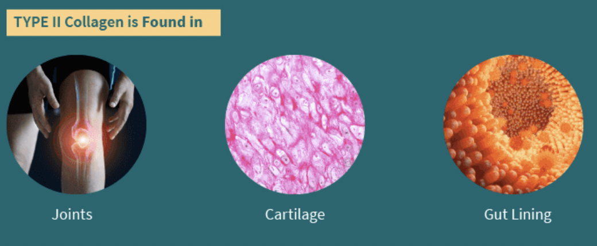
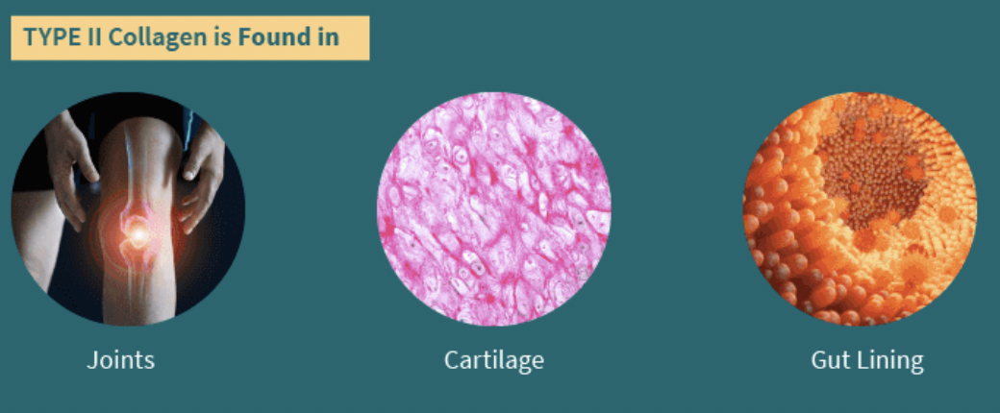
 ### collagen fibers {#collagen-fibers }
- 最多
- Secreted by the fibroblasts
- type I collagen
- 光學顯微鏡下看不到橫紋，TEM下有
- 銀染下棕色
### elastic fibers {#elastic-fibers }
- type II collagen
- H&E下不被染，用Orcein, Aldehyde fuchsin staining，深紫
- TEM下無橫紋
### collagen fibers {#collagen-fibers }
- 最多
- Secreted by the fibroblasts
- type I collagen
- 光學顯微鏡下看不到橫紋，TEM下有
- 銀染下棕色
### elastic fibers {#elastic-fibers }
- type II collagen
- H&E下不被染，用Orcein, Aldehyde fuchsin staining，深紫
- TEM下無橫紋


reticular fibers
- type III collagen
- black argyrophilia(銀染黑)
- 淋巴、血球、內分泌腺
Connective tissue proper 固有結締組織
| Dense CT | Loose CT |
|---|---|
| Fibroblast Collegen fiber(I) |
- |
玻片tips
- tendon 的 Fibroblast核拉長

collagen fiber stain

Cartilage

- Perichondrium
- 軟骨膜，外層相似dense CT，內層分化
- Chondroblasts
- acting 類似Fibroblast
分類
Hyaline cartilage

- Isogenic group
- chondrocyte 整群在中間
- Lacuna
- 軟骨窩（空白），chondrocyte脫水會露出
- 最多
- collegen(II)(和matrix折光差不多)
- lacuna 周圍較深，因為剛分泌出的proteoglycans 未和collegen(II)結合
- 因此matrix可分成perichondrim, interperichondrim region.
Hyaline cartilag

- hyaline + elastic fiber
- 耳殼、會厭軟骨
Fibrocartilage

- 緩衝、耐張力
- 軟骨、dense CT之間
- 無Perichondrium
- collage(I)
- chondrocyte 排成一排
Growth
- Appositional
- Interstitial
Info
TEM下，合成 Fibrocartilage 的 condrocyte 有發達RER，合成hyaline,elastic有發達高基氏體
Bone
組成

- periosteum
- 骨膜

- Osteocytes
- 伸出細胞質(Canaliculi)，互相形成gap junction
- Osteoclasts
- 多核，roughly border 鄰骨頭(分泌H+)
- Osteoblasts
- periosteum下，Cuboidal
鈣化

Info
Ob 分泌collagen (I)
侵蝕

Info
維護Howship lacunae 酸性，侵蝕骨組織，再將Ca2+排到血液中
Extracellular matrix
 - Compact bone
- Lamellae (骨板)
- Circumferential lamellae
- Concentric lamellae
- Interstitial lamellae
- Osteons (骨單位 Haversian systems)
- Spongy (cancellous) bone
- Trabeculae (骨小梁)
- Spicules (骨小針)
- Compact bone
- Lamellae (骨板)
- Circumferential lamellae
- Concentric lamellae
- Interstitial lamellae
- Osteons (骨單位 Haversian systems)
- Spongy (cancellous) bone
- Trabeculae (骨小梁)
- Spicules (骨小針)
Info
Osteons
- Concentric lamellae
- Central canal (BV, LV, nf.)
- Perforating (Volkmann’s) canal(橫向溝通)
- Canaliculi
- Lacunae (osteocyte)
Bone formation
begins by 8th
- Intramembranous ossification
- 膜內骨化
- Endochondral ossification
- 軟骨內骨化
Intramembranous ossification
生成扁平骨

- mesenchymal cell
- 間葉細胞
Endochondral ossification
Interstitial growth


Info
初級骨化中心向內骨化
- resting
- hyaline cartilage 內小細胞
- proliferation
- 變大、排成串
- 有絲分裂
- hypertrophic
- 停止分裂，最大
- calcification
- 鈣化（看起來模糊）
- ossification
- 形成管道（血管）
- Epiphysis
- 生長板
Appositional growth
加粗
需要 Osteoclast 加大骨髓腔
Info
老化
- Ca2+流失
- 不分泌基質
關節

Info
Synovial membrane
type A
- from Macrophage
- 大圓
type B
- from mesenchymal cell
- 分泌潤滑
- 細扁
波片
https://www.histologyguide.com/
Blood
白血球
 ## Platelet {#platelet }
> from Mk cell(一半以上來自肺部)
## 發育 {#發育 }
**胚胎時期**
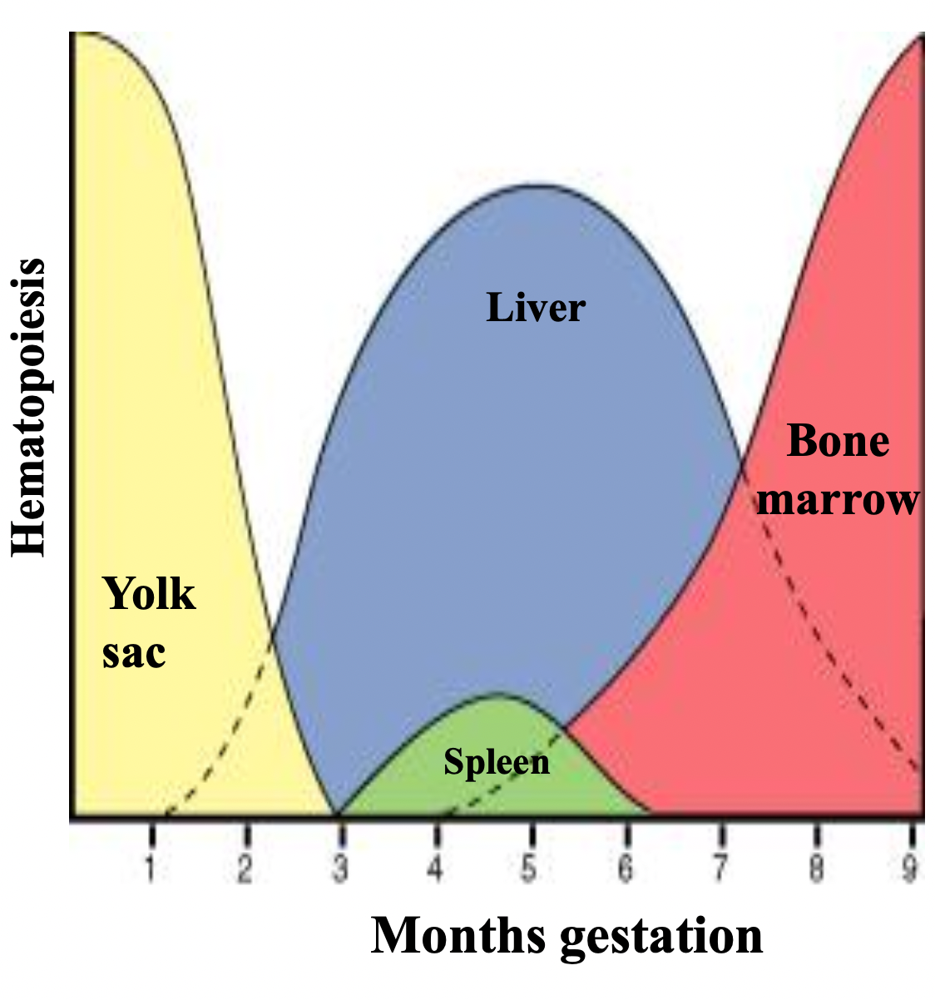
# Muscle {#muscle }
> from 中胚層
## Skeletal m. {#skeletal-m }
### formation {#formation }
mesenchymal cell $\rightarrow$ skeletal muscle
## Platelet {#platelet }
> from Mk cell(一半以上來自肺部)
## 發育 {#發育 }
**胚胎時期**
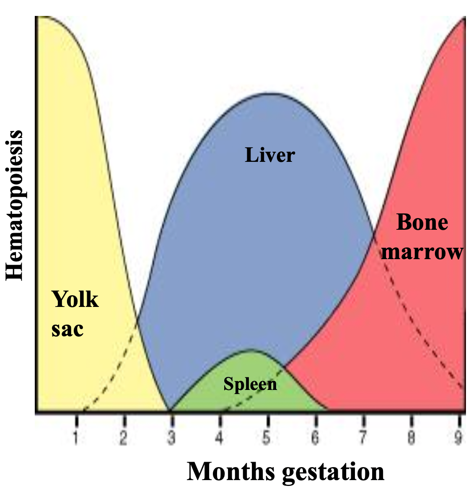
# Muscle {#muscle }
> from 中胚層
## Skeletal m. {#skeletal-m }
### formation {#formation }
mesenchymal cell $\rightarrow$ skeletal muscle
CT
1. epimysium (Deep fascia) = surrounds the whole muscle 2. perimysium = surrounds fascicles- fascicles
- 數十肌肉細胞束
- endomysium = separates individual muscle cells
Myofibrils
 **Dark**: A band
**Light**: I band
**Dark**: A band
**Light**: I band

細胞質
- myoglobin
- O2結合蛋白
- SER(sarcoplasmic reticulum)
- 存Ca2+
細胞膜
T tubule : 細胞膜凹陷在AI junction，傳遞電位分類
- Slow(red)
- myoglobin 豐富
- Fast(white)
Cardiac m.

Smooth m.

Summary
| Skeletal m. | Cardiac m. | Smooth m. | |
|---|---|---|---|
| 核 | 多 | 1-2 | 1 |
| 玻片特徵 | 細胞核在邊緣，疏鬆 | 心間盤 | 長條細胞核 |
| 纖維 | 橫紋 | 橫紋 | 無橫紋 Dense body |
| 細胞質 | myoglobin | mitochondria | - |
| sarcoplasmic reticulum |
tubule triad |
tubule no triad |
no |
| T-tube | AI junction | Z-line | no |
| 傳遞 | - | gap j. | caveolae (Ca2+) |
心血管
## Epicardium {#epicardium } 脂肪層外 ## Myocardium {#myocardium }
Purkinje fibers
- Myocardium 的Actin, Myosin纖維被神經纖維(Myofilament)取代
- 比心肌細胞大
- 位於 Subendothelial
- 淺色，看不到fiber

白色空泡

黑色:心肌 白色: Purkinje fiber

Endocardium
Simple Squamous Epithelium

血管

tunica intima(內皮)
- endothelial
- basal lamina(基底膜)上
- Subendothelial
- Loose CT
- Internal elastic lamina
分類
| intima | media | adventitia | ||||||
|---|---|---|---|---|---|---|---|---|
| endothelium | subendothelial | internal elastic membrane |
elastin | smooth muscle | externa elastic lamina |
fibroelastic CT | vasa vasorum | |
| Elastic a. | 有 防凝血, Microphages |
有 | 不明顯 | 多 | 多 | 薄 | 薄 | 有 |
| Muscular a. | 有 | 有 | 明顯 | 有 | 4-40 | 厚 | 厚 | 少 |
| Small a./ Arterioles |
有 | 有 | 有 | 無 | 1-2 | 無 | 薄 | 無 |
| Capillaries/ Postcapillary v. |
單層 | 無 | 無 | 無 | pericyte | 無 | 無 | 無 |
| Muscular v. | 有 | 無 | 無 | 無 | 1-2 | 無 | 薄 | 無 |
| Medium v. | 有 | - | 無 | 少 | 少 | 無 | 有 | 有 |
| Large v. | 有 | 有 | 不明顯 | 薄 | 厚 | 有 | ||
Tip
玻片動脈內無血球
Elastic arteries
特殊染色彈性纖維
彈性動脈內皮
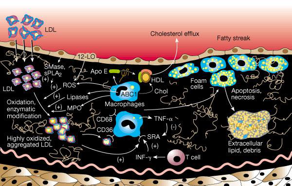Muscular arteries
透明帶: Elastin 圓核:Smooth m. 扁核:Fibroblast


Small arteries and Arterioles
elastin可見，外圍是1-2層平滑肌細胞

Capillaries

 - continuous
- fenestrated
- 內皮細胞不含核的部分很薄
- 有許多貫穿細胞直徑一般為60～80nm孔洞
- 胃腸粘膜(lamina propria)
- 某些內分泌腺(Endocrine gland)
- 腎血管球(Kidney’s glomerulus)等處
- sinusoid(竇狀)
- 管腔較大
- 脾、某些內分泌腺
#### Venules {#venules }
- continuous
- fenestrated
- 內皮細胞不含核的部分很薄
- 有許多貫穿細胞直徑一般為60～80nm孔洞
- 胃腸粘膜(lamina propria)
- 某些內分泌腺(Endocrine gland)
- 腎血管球(Kidney’s glomerulus)等處
- sinusoid(竇狀)
- 管腔較大
- 脾、某些內分泌腺
#### Venules {#venules }
 #### Medium/ Large Veins {#medium-large-veins }
have valves
>vasa vasorum
#### Medium/ Large Veins {#medium-large-veins }
have valves
>vasa vasorum

 ## 淋巴管 {#淋巴管 }
細胞用疊的，間格大
## 淋巴管 {#淋巴管 }
細胞用疊的，間格大

Lymphatic System

- Cisterna chvli
- 消化道淋巴匯集
Lymph node
- Capsule
- Afferent Subscapular sinus Trabecular sinuses Medullary sinuses Efferent
 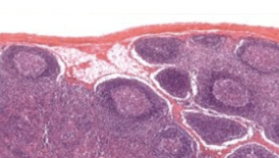
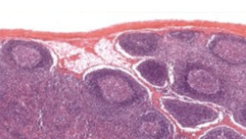
Epithelium reticular cell
 ### High endothelial venule (HEV) {#high-endothelial-venule-hev }
血管，淋巴細胞鑽出到germinal center 活化
### High endothelial venule (HEV) {#high-endothelial-venule-hev }
血管，淋巴細胞鑽出到germinal center 活化
Structure
Lymphatic nodules
Warning
In all lymphoid organ except the thymus
Secondary nodule
形成抗體
GC: Germinal center (產生抗體, B cell)
MnZ: Mantle zone(T cell)
粉紅色: Reticular cell
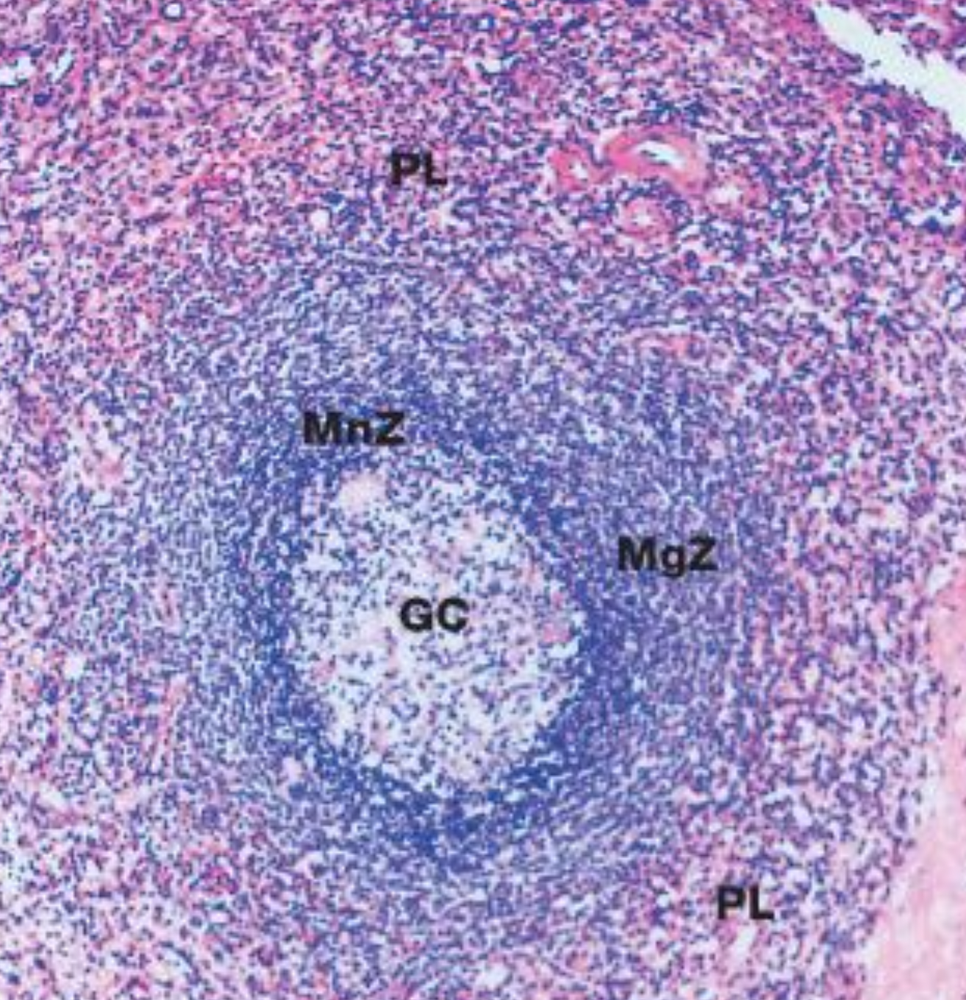
Tonsil
-
Pharyngeal tonsil
- Pseudostratified ciliated columnar epithelium
-
Palatine tonsils
- 軟顎下
- CT包覆
-
Tonsilar fossa
-
Lingual tonsils
- 舌頭後上
- Stratified Squamous nonkeratined epithelium
-
Crypts
- nonkeratined
- 非角質化
Mucosa associated lymphoid tissue(MALT)
位於黏膜層
Aggregated lymphatic follicles(Peyer’s patches)
位於消化器官
Thymus
- 只有 efferent lymph vessel
- 無 lymphatic nodules
- 胸骨與主動脈弓之間
- CT(Capsule and Trabeculae)
Tip
明顯分頁

Cortex
- Immature T cell
- epithelium reticular cell
- 保護、訓練 T cell
- desmosome
Blood-thymus barrier

Medulla
- 顏色較淡
- epithelium reticular cell
Hassall’s corpuscles
圍成同心圓的reticular cell


Spleen
- fibrous capsule>trabeculae
- reticular fiber
- white pulp( Secondary lymphatic nodule)
- red pulp (other)


White/red Pulp
- central a. 被 T cell 包覆（Periarterial lymphatic sheath）
- Secondary lymphatic nodule
Central artery

Lymphocyte
NK cell
- 細胞較大
- 細胞核腎形

Nerve tissue
Cell body
- 核大，核仁明顯
- rich rER & free ribosomes(called Nissl body)
- dendrite
- Axon
- Axon hillock(看不到nissl body)
Synapses
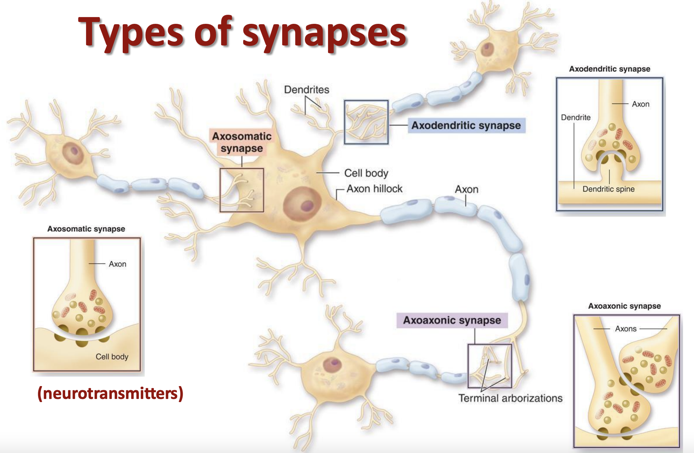Structural class
- bipolar
- multi polar
- pseudounipolar
supporting cell
CNS
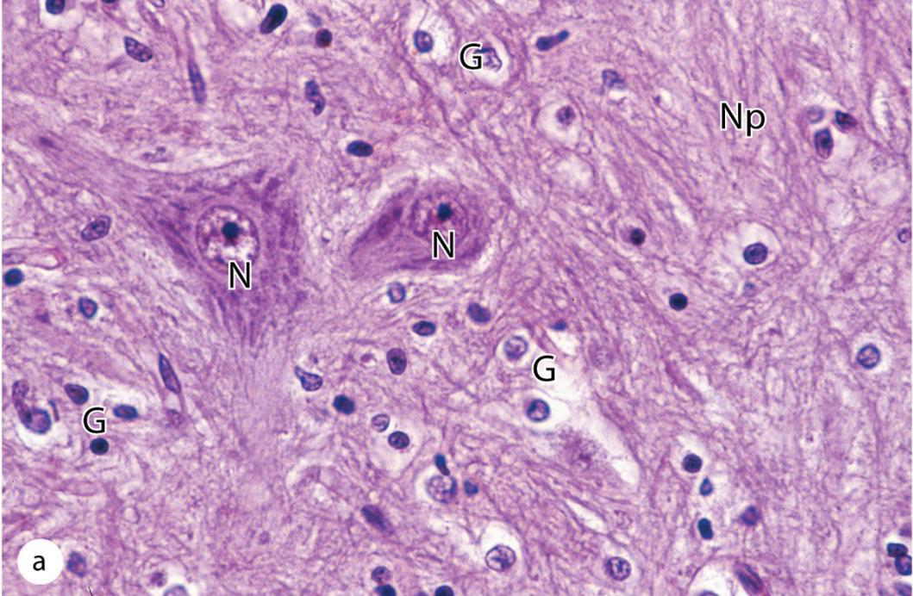

Oligodendrocyte
- 富含脂質
- 形成多個myelin sheath
 > 周圍空一圈
### Astrocyte {#astrocyte }
- 代謝、營養
- BBB（blood–brain barrier ）
> 周圍空一圈
### Astrocyte {#astrocyte }
- 代謝、營養
- BBB（blood–brain barrier ）
Microglial
- 巨噬
Tip
圓圓小顆
Ependymal cells
- 腔室內緣cilia

Eye

非瞳孔
- Conjunctiva(結膜)
tunica fibrosa （纖維膜）
- sclera(鞏膜)
- 平行的 collagen fibers
tunica vasculosa （血管膜）
- choroid
- 含黑色素吸光
- Bruch’s membrane(基底膜)
- 含血管，供應retina

瞳孔
tunica fibrosa （纖維膜）
- cornea （角膜）
- 可能會有色素沉澱(pigmented)
tunica vasculosa （血管膜）
- ciliary body
- process+epithelium+muscle
- 製造 Aqueous(房水)
- iris(虹膜)

tunica nervosa
- retina
- pigmented layer
- Neural layer
- optic nerve & ora serrata
Cornea
 由外而內
- corneal epithelium
- Bowman's membrane
- stroma
- 充滿collagen fiber
- Descemet’s membrane
- endothelium
由外而內
- corneal epithelium
- Bowman's membrane
- stroma
- 充滿collagen fiber
- Descemet’s membrane
- endothelium
Lens
ciliary body 伸出 zonular fibers 連接lens

Retina
外而內
- pigmented epithelium
- 色素細胞吸收光線
- segment layer of rods and cones
- visual cell 的棒棒們
- external limiting membrane
- Muller cells
Visual cells(rods, cones)
-
outer nuclear layer
- visual cells細胞核
-
outer plexiform layer
- 樹突
Bipolar neurons
- inner nuclear layer
-
horizontal (橫走，整合)
-
Bipolar neurons
-
Amacrine cells (橫走，整合)
-
- inner plexiform layer
- 突觸
multipolar ganglion
-
ganglion cell layer
- multipolar ganglion cells
-
nerve fiber layer
- ganglion cell 軸突
Basal lamina
- inner limiting membrane
- Muller cells

Optic disk

Tarsal plate
分泌黏性

lacrimal apparatus

Ear
 >Co:耳蝸
>Co:耳蝸
tympanic membrane
- outer : stratified squamous epi.
- between : collagen fibers, elastic fibers, fibroblast
- inner : simple cuboidal epi.

Middle ear
simple cuboidal epi. 組成
傳聲
- Oval/vestibular window (卵圓窗)
Auditory ossicles
- Malleus
- Incus
- Stapes
- Cochlear/round window(圓窗)(多餘聲波)
 ## 耳蝸 {#耳蝸 }
- scala vestibuli(vestibular canal)
- 外淋巴液
- scala media(cochlear duct)
- 內淋巴(duct外側壁的stria vascularis分泌)
- scala tympani(tympani canal)
- 外淋巴液
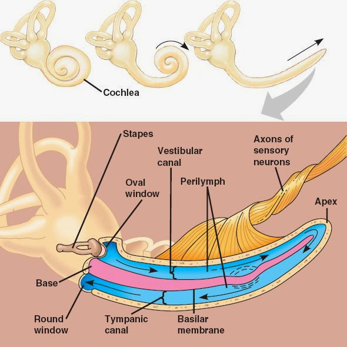
## 耳蝸 {#耳蝸 }
- scala vestibuli(vestibular canal)
- 外淋巴液
- scala media(cochlear duct)
- 內淋巴(duct外側壁的stria vascularis分泌)
- scala tympani(tympani canal)
- 外淋巴液
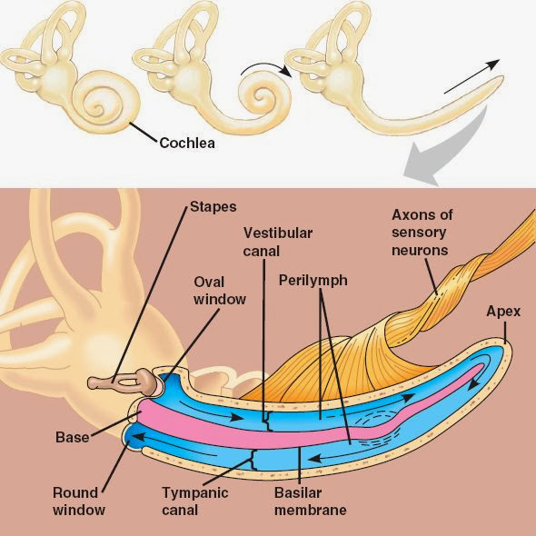
Integument
| Thick | Thin | |
|---|---|---|
| Layer | 5 | 4 |
| Sweet g. | 有 | 有 |
| hair follicles | 無 | 有 |
| sebaceous g. | 無 | 有 |
| stratum lucidum 透明層 |
有 | 無 |
 |
||
Layers
Epidermis
- stratum corneum
- stratum lucidum
- stratum granulosum
- 細胞核不明顯
- 顆粒染色 (keratohyalin granules)
- 準備細胞凋亡
- stratum spinosum
- 細胞間脊狀連接(Desmosome)
- stratum basale (germinativum)
- 立方狀
Cell of Epidermis
- Keratinocytes (角質化)
- Melanocytes (黑色素)
- Langerhans cell (免疫)
- Merkel cell (神經性，壓覺 )
Dermis
- Papillay layer
- Loose CT
- Meissner’s corpuscles (輕壓)
- Reticular layer
- Dense CT
- Pacinian corpuscles (重壓)
- hair follicles, sebaceous g., sweat g.
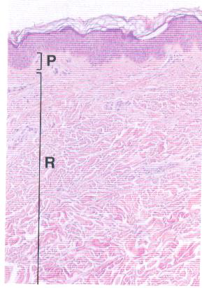

Nerve supply

Hair
- Infundibulum
- Isthmus
- Inferior segment

Meissner’s corpuscles

Pacinian corpuscles
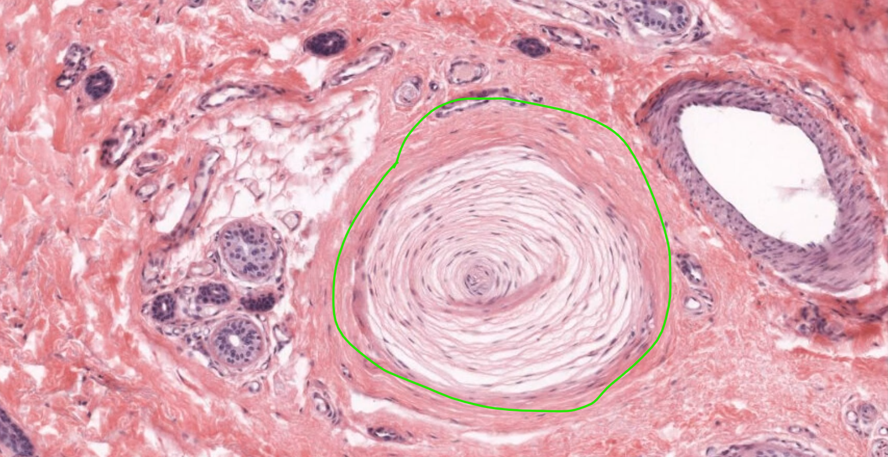Melanocytes

Sweet g.
Duct cell 是複層鱗狀

Respiratory
Nasal cavity
 - Non-keratinized Stratified Squamous Epi.
- Pseudostratified ciliated columnar epithelium with goblet cells
- Non-keratinized Stratified Squamous Epi.
- Pseudostratified ciliated columnar epithelium with goblet cells
Olfactory epithelium
- Basal cell: stem cell
- Olfactory neurons: bipolar; Nuclei lie
Larynx
- 聲門上：Stratified squamous nonkeratinized epithelium
- 聲門下：Pseudostratified ciliated columnar epithelium
軟骨類型
| Cartilage | Type |
|---|---|
| Epiglottic | elastic |
| Thyroid | hyaline |
| Arytenoid | elastic, hyaline |
| Cricoid | hyaline |
| C-shape | hyaline |
Trachea
 - Basement membrane 厚
- Goblet cells: 分泌黏液
## Terminal bronchiole {#terminal-bronchiole }
- Basement membrane 厚
- Goblet cells: 分泌黏液
## Terminal bronchiole {#terminal-bronchiole }
 - Clara cell: 無纖毛，圓頂，取代 Goblet cells
- Clara cell: 無纖毛，圓頂，取代 Goblet cells
Alveolar ducts
- 無軟骨
- Type II alveolar cell 立方狀，分泌表面張力素
- Dust cell 在 Pore


Pleura

M simple squamous mesothelium
A alveoli
V blood vessel
L lymphatics

整理

Lab
Olfactory epithelium

Trachea
Lung
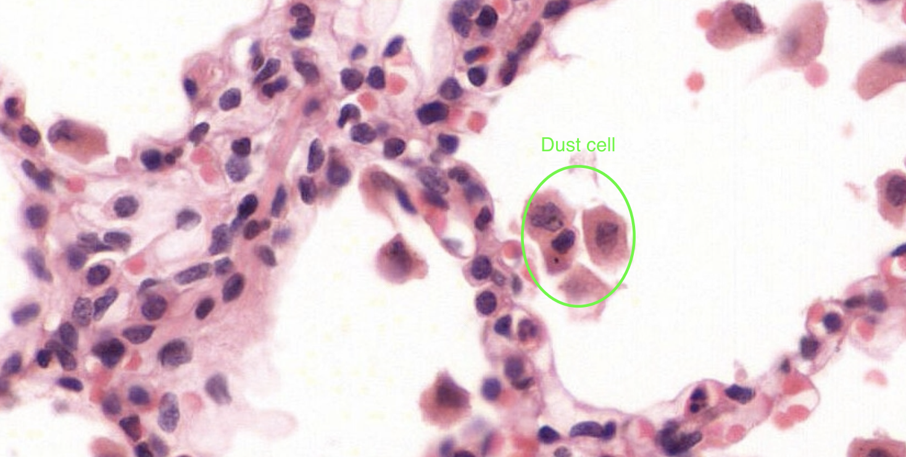
消化系統
Oral cavity
Mucosa
- Lining mucosa
- Masticatory mucosa
- 耐磨(Kerayinized)
- 上顎、牙齦
- Specialized mucosa
- 感覺

味蕾
 ### 唾腺 {#唾腺 }
- secretory acini
- Mucous acini
- 透明
- 分泌粘液（糖蛋白）
- Serous acini
- 嗜酸，紅
- 分泌物較稀薄,含唾液澱粉酶。
### 唾腺 {#唾腺 }
- secretory acini
- Mucous acini
- 透明
- 分泌粘液（糖蛋白）
- Serous acini
- 嗜酸，紅
- 分泌物較稀薄,含唾液澱粉酶。
Serous semilunar
- ducts
- Intercalated duct
- Simple cuboid epi.
- Striated duct
- 粒線體明顯
- 粒線體明顯
- Excretory duct
- 多層扁平
- Intercalated duct
 #### Parotid {#parotid }
- Intercalated duct 發達
#### Parotid {#parotid }
- Intercalated duct 發達
 #### Submandibular {#submandibular }
- Striated duct 發達
#### Sublingual {#sublingual }
- Excretory duct 發達
#### Submandibular {#submandibular }
- Striated duct 發達
#### Sublingual {#sublingual }
- Excretory duct 發達

牙齒
 ### Enamel {#enamel }
- Ameloblast 分泌 Enamel 最後消失
### Dentin {#dentin }
- Odontoblast 分泌 type I collage fiber, GAG，鈣化包住自己
- 形成 Dentinal tubules
### Enamel {#enamel }
- Ameloblast 分泌 Enamel 最後消失
### Dentin {#dentin }
- Odontoblast 分泌 type I collage fiber, GAG，鈣化包住自己
- 形成 Dentinal tubules
Periodontium
- Cementum
- Periodontal ligament/ Sharpey fibers (collagen fibers )
- Alveolar bone with the associated gingiva

Lab
泌尿系統
Renal
-
Proximal convoluted tubule (PCT)
- 嗜酸
-
Proximal straight tubule (PST)
-
Thin segment
-
Distal convoluted tubule (DCT)
-
Distal straight tubule (DST)
 ## Ureter {#ureter }
- Mucosa
- Muscularis
- 三層
- Adventitia (外膜)
## Ureter {#ureter }
- Mucosa
- Muscularis
- 三層
- Adventitia (外膜)
Urinary bladder
- Detrusor m. (逼尿肌)

Urethra
內而外
- Transitional epi.
- Stratified/ Pseudostratified columnar epi.
- Stratified squamous epi.
Intraepithelial gland
S:sinus
M:mucosa (Intraepithelial gland )

Littre gland
- 全在 lamina propria 裡面

生殖系統
Testes


- 約250 個小葉
- TA: Dense irregular
Seminiferous tubules
 - Tunica (lamina) propria
- ==Myoid cell==
- 收縮
- 細長
- Wave of the seminiferous tubule
- 分區成熟
- Tunica (lamina) propria
- ==Myoid cell==
- 收縮
- 細長
- Wave of the seminiferous tubule
- 分區成熟
Sertoli cell (St)
- 支持細胞
- 長核，淡染
- 核仁明顯(Karyosome)
- 血睪障壁(blood-testis barrier)，阻擋免疫

Spermatogenic cell
細胞質會一直黏在一起
- Spermatogonia (SA, SB)
- 貼在 basal lamina
- Primary spermatocyte (S1)
- 花核，最大
- Spermatid (S3)
- early
- late
- Spermatozoa (S4)


Interstitium
Leydig cell
- 核大淡染，核仁明顯
- 數顆聚集

Intratesticular Ductus
Rectus tubule Rete testis
- 柱狀 立方 扁平
Efferent Ductule
- 高矮細胞出頭，管壁波浪

Epididymis
 - Pseudostratified epi
- Stererocilia
- microvilli
- 抑制受精能力
- Halo cell
- 核深染，格格不入
- Pseudostratified epi
- Stererocilia
- microvilli
- 抑制受精能力
- Halo cell
- 核深染，格格不入
Duct deferens
 - 厚 smooth m.
- 高矮細胞出頭，管壁波浪
- 厚 smooth m.
- 高矮細胞出頭，管壁波浪
Ampulla of Ductus Deferens

- 肌肉層漸薄
Ejaculatory Duct (ED)
 - 肌肉層消失
- 肌肉層消失
Seminal Vesicle
 - 60%-70% 精液
- 多層次分支
- 60%-70% 精液
- 多層次分支
Prostate Gland
- Peripheral zone
- 佔最多
- 直腸診斷
- Transitional zone
- BPH (良性攝護腺肥大症)
- Prostatic concretions (CA)
- 年輪狀，填在線體裡面

- 年輪狀，填在線體裡面
Penis

- Tunica albuginea (Deep fascia)
- Trabecular
- corpus cavernosum 實心部分
- Penile Urethra
Sperm
## Lab {#lab-3 }考試要寫分層
- Adventitia
- Outer longitudinal
- Circular layer
- Inner longitudinal


女性生殖系統
Ovary
- Germinal epithelium
- Simple cuboid
- Tunica albuginea
- Dense CT
- Cortex
- Medulla
 >不成熟者靠外圍，較小
>不成熟者靠外圍，較小

Ovarian follicles
Primordial
- follicle cells 包圍 只有一層 Simple squamous
 #### Primary follicle {#primary-follicle }
- ==Simple cuboid 包圍==
- 多層稱為 Stratum granulosum (顆粒層)，細胞改稱 Granulosa cell
- Zona pellucida (透明帶)
- Cortical granules
- 精子進入後釋放激素，引發cortical reaction，破壞 zona pellucida 上的受體
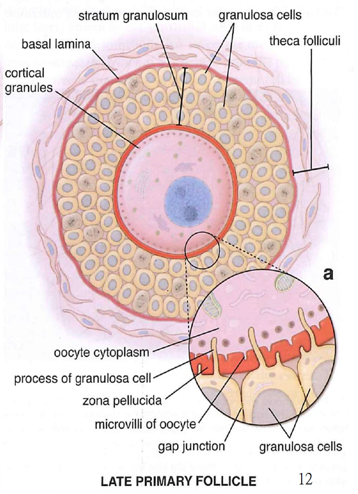
#### Primary follicle {#primary-follicle }
- ==Simple cuboid 包圍==
- 多層稱為 Stratum granulosum (顆粒層)，細胞改稱 Granulosa cell
- Zona pellucida (透明帶)
- Cortical granules
- 精子進入後釋放激素，引發cortical reaction，破壞 zona pellucida 上的受體
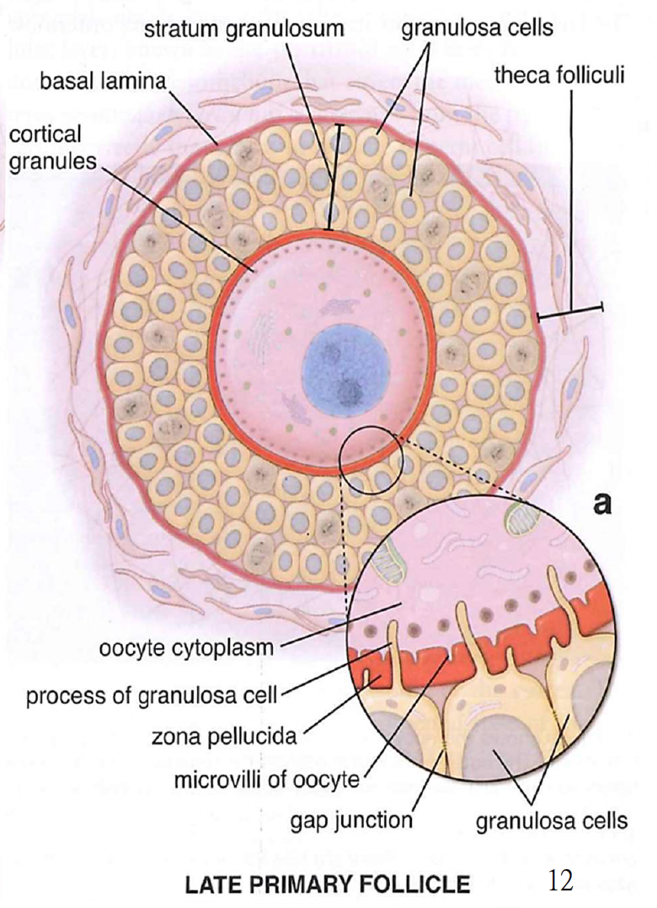
Secondary (Aantral) follicle
- 出現空隙
Theca internal (TI)- 內分泌
- LH receptor
- Theca external (TE)
- 收縮，擠出卵

Mature (Graafian) follicle
- Cumulus oophorus (CO)
- Corona radiata (CR)
- 排卵時丟出

Atretic follicle (AF)
壞掉的
- Granulosa cell 掉落到空腔

- Zona pellucida (透明帶) 明顯 ，像洩氣氣球

Corpus luteum
- Theca lutein cell (TLC)
- 源於 Theca internal
- 深染，小顆密集
- Granulosa lutein cell (GLC)
- 源於 stratum granulosum

Corpus albicans
### 分裂 {#分裂 }
lab


Atretic follicle
Corpus luteum
 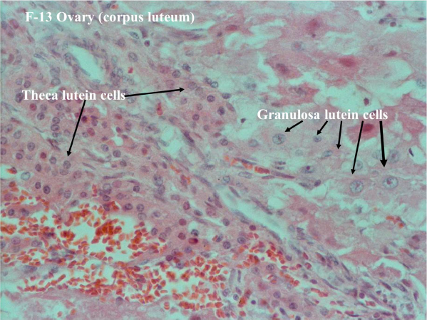
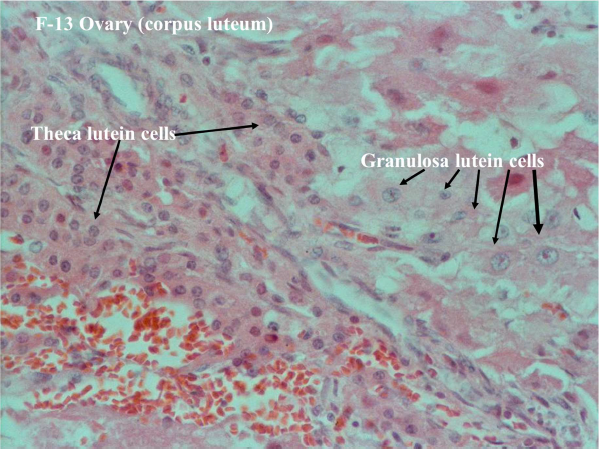
Uterine tube
- Mucosa
- Ciliated columnar epithelium (CC)
- Peg cell (PC 分泌)


Uterus
- Epithelium
- Ciliated columnar epithelium
- 凹陷形成 Endometrium gland
- Endometrium
- Functional layer
- Basal layer
- Myometrium